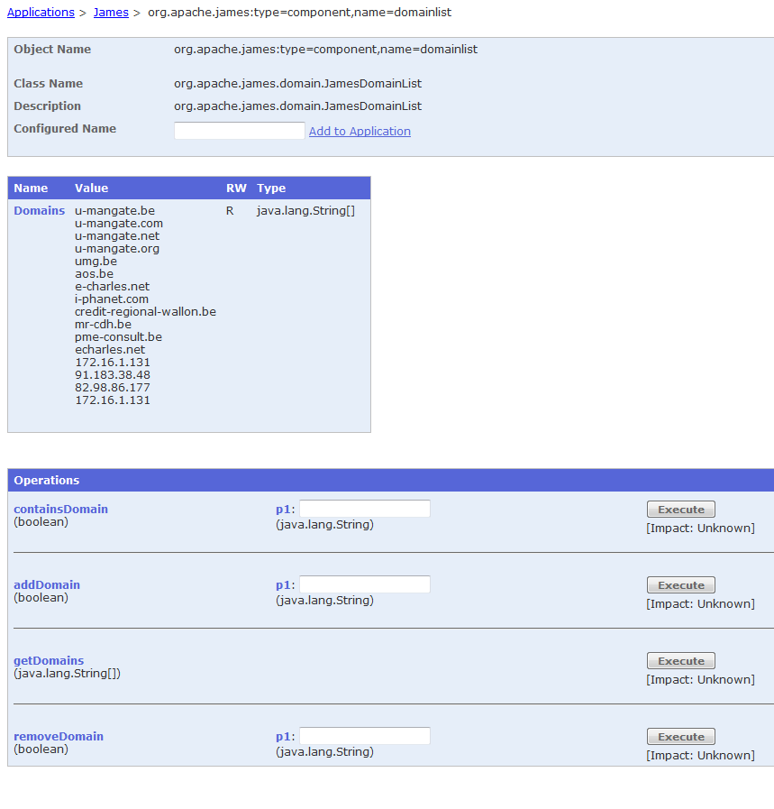

You need to make sure that your user/domain/mail repository configuration is correct before managing. If you change your user/domain/mail repository type (i.e. file to database) or the configuration of your user repository (i.e. the file or database URL) after you have added user/domain/mail, you may lose your user/domain/mail data. Please change these values with care.
After you've done this, restart James to ensure that any changes you've made in the configuration are incorporated into the running system.
You are now ready to manage Domains, Users and Recipient Rewrite Table.
You can manage James via:
Once James is up and listening, managing via the command line interface is simple.
cd bin
./james-cli.sh (or james-cli.bat on windows) ./james-cli.sh -h localhost -p 9999
You will be shown with a list of commands.
usage: java org.apache.james.cli.ServerCmd --host <arg> <command>
-h,--host </arg> node hostname or ip address
-p,--port </arg> remote jmx agent port number
Available commands:
adduser </username> </password>
removeuser </username>
listusers
adddomain </domainname>
removedomain </domainname>
listdomains
containsdomain
Note the address and port defined in conf/jmx.properties (default is jmx.address=127.0.0.1 and jmx.port=9999)
James can be managed via JMX.
The managed objects are exposed from localhost only (for security reasons) on the following URL:
service:jmx:rmi://localhost/jndi/rmi://localhost:999/jmxrmi
Simply launch jconsole to access the exposed attributes and methods.
If you want a remote access, change 'localhost' to your server hostname in the previous URL:
service:jmx:rmi://localhost/jndi/rmi://localhost:999/jmxrmi
To manage through a firewall, you will have to take care to random ports creation (read JMX agent , JMX through firewall and Getting Java JMX to work through firewalls properly.
You can install a web application management tool such as jmanage. You will get screens such as the following one.
